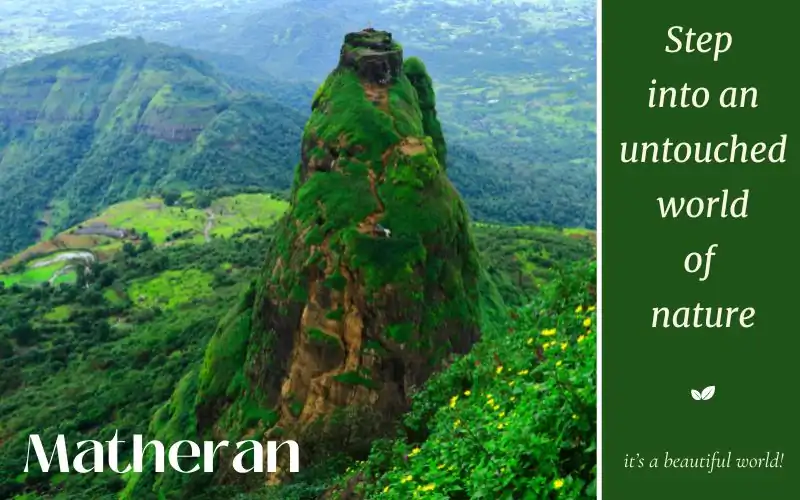
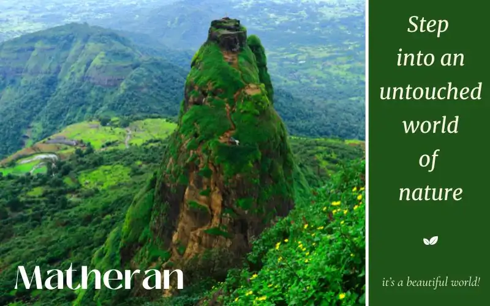

Beat the Heat: India's Top 12 Summer Destinations


Blog
Best Restaurants in Yelagiri
The cuisine of Yelagiri is an earthy one, loyal to its agrarian and tribal origins, leaving a rather homely aftertast...
Read MoreExplore the untouched beauty of nature in the majestic waterfalls, the scenic gardens and the serene lakes of Yelagiri!
A marvellous oddity in the South Indian landscape, the hill town of Yelagiri resembles an introspective saint with its quiet and gentle aura. The best way to explore the town intimately is to roam the rough-hewn mountain paths, follow worn-down trails and see the wonderful sights the fourteen hamlets, scattered temples, gardens, and valleys have to offer! It is a place that nature and history have contrived to keep hidden, so if you like to roam off the beaten tracks and chance upon rare getaways, this town, and its unravished pleasures will welcome you!
Must VisitWhen in Yelagiri, you simply must trek up the trails of the Swamimalai Hills and witness the panoramic view, experience the lively Jalagamparai Falls, feed the birds and pet adorable furry friends in the Fundera Park. Delight in the delicacy of Payasam and take back jars of home-cultured honey to carry back the aftertaste of your wonderful getaway.
Best time to visitThe ideal time to visit would be the months of October to February. Winter in Yelagiri is mellow and pleasant, the sky is clear and the stiff breeze is invigorating for the travellers! You can take forest hikes and long walks down hilly lanes without the fear of rain or hail. May finds the town's Summer Festival in full swing, so if you're fond of those, you can visit in the summer.
TriviaNicknamed 'Poor Man's Ooty', Yelagiri was an erstwhile property of the Zamindar family which was later taken over by the government.
InterestThis quaint hill station offers adventure sports with an intimate charm due to its offbeat nature. With rugged terrains, nature trails, & ziplining, it is ideal for trekking, paragliding, rock climbing, & camping. The Yelagiri Paragliding Festival further adds to its appeal.
With its tranquil, less-commercialized charm, Yelagiri is known for its quiet natural beauty, tribal culture, and adventure activities like trekking and paragliding in a less crowded environment, making it more personal and a perfect spot for eco-tourism.


Digha, Purba Medinipur, Kolkata, West Bengal 721428
Digha is a small coastal hamlet, covered by the sands of the shore almost completely. The New Digha beach is one of its attractions, found after a quick stroll through the town. Enjoy the large waves rushing past each other on the water on their way to meet the powdery sands.
Chandpur Sea Beach, Chandapur, West Bengal 721423
While the traditional beach invokes the image of blue waves on ochre sands, Chandpur Beach creates an illustration of the passage of time. It invites all those looking to spend quiet moments amidst the myriad shades of nature.
Digha, Purba Medinipur, Kolkata, West Bengal 721428
Digha is a small coastal hamlet, covered by the sands of the shore almost completely. The New Digha beach is one of its attractions, found after a quick stroll through the town. Enjoy the large waves rushing past each other on the water on their way to meet the powdery sands.
Chandpur Sea Beach, Chandapur, West Bengal 721423
While the traditional beach invokes the image of blue waves on ochre sands, Chandpur Beach creates an illustration of the passage of time. It invites all those looking to spend quiet moments amidst the myriad shades of nature.
Digha, Purba Medinipur, Kolkata, West Bengal 721428
Digha is a small coastal hamlet, covered by the sands of the shore almost completely. The New Digha beach is one of its attractions, found after a quick stroll through the town. Enjoy the large waves rushing past each other on the water on their way to meet the powdery sands.
Chandpur Sea Beach, Chandapur, West Bengal 721423
While the traditional beach invokes the image of blue waves on ochre sands, Chandpur Beach creates an illustration of the passage of time. It invites all those looking to spend quiet moments amidst the myriad shades of nature.
Digha, Purba Medinipur, Kolkata, West Bengal 721428
Digha is a small coastal hamlet, covered by the sands of the shore almost completely. The New Digha beach is one of its attractions, found after a quick stroll through the town. Enjoy the large waves rushing past each other on the water on their way to meet the powdery sands.
Chandpur Sea Beach, Chandapur, West Bengal 721423
While the traditional beach invokes the image of blue waves on ochre sands, Chandpur Beach creates an illustration of the passage of time. It invites all those looking to spend quiet moments amidst the myriad shades of nature.
Digha, Purba Medinipur, Kolkata, West Bengal 721428
Digha is a small coastal hamlet, covered by the sands of the shore almost completely. The New Digha beach is one of its attractions, found after a quick stroll through the town. Enjoy the large waves rushing past each other on the water on their way to meet the powdery sands.
Chandpur Sea Beach, Chandapur, West Bengal 721423
While the traditional beach invokes the image of blue waves on ochre sands, Chandpur Beach creates an illustration of the passage of time. It invites all those looking to spend quiet moments amidst the myriad shades of nature.
Digha, Purba Medinipur, Kolkata, West Bengal 721428
Digha is a small coastal hamlet, covered by the sands of the shore almost completely. The New Digha beach is one of its attractions, found after a quick stroll through the town. Enjoy the large waves rushing past each other on the water on their way to meet the powdery sands.
Chandpur Sea Beach, Chandapur, West Bengal 721423
While the traditional beach invokes the image of blue waves on ochre sands, Chandpur Beach creates an illustration of the passage of time. It invites all those looking to spend quiet moments amidst the myriad shades of nature.
Digha, Purba Medinipur, Kolkata, West Bengal 721428
Digha is a small coastal hamlet, covered by the sands of the shore almost completely. The New Digha beach is one of its attractions, found after a quick stroll through the town. Enjoy the large waves rushing past each other on the water on their way to meet the powdery sands.
Chandpur Sea Beach, Chandapur, West Bengal 721423
While the traditional beach invokes the image of blue waves on ochre sands, Chandpur Beach creates an illustration of the passage of time. It invites all those looking to spend quiet moments amidst the myriad shades of nature.
HMX8+3V4, Swamimalai Treking Rte, Mangalam, Mangalam R.F., Tamil Nadu 635853
The 6km trek up Swami Malai hills starts from a small temple in the village of Mangalam and winds up through the woody thickets of the hill to the highest point of Yelagiri. Once you reach the top, brace yourselves for the stunning panoramic view of the earth meeting the sky!
GJVC+838, Nagalathu Extension R F, Tamil Nadu 635853
The serpentine Attaru River plunges from a height of 30m to form the mesmerising Jalagamparai Waterfalls. A trek downhill from Yelagiri would allow you to feel the crystal-clear spray of cold river water. You can witness the waterfall in its full glory in the November-February period since the river tends to dry up in the summer months.
HJQM+PWC, Yelagiri, Tamil Nadu 635853
The lake is manmade but extends deep into the hillside accompanied by a vast park, laid with lush greenery, bridges, and pathways. The lake is famous for boat rides and the pleasures of gliding through the sparkling waters, which otherwise resembles the still surface of a mirror, are manifold. The exquisite flora of the garden on the other side is just as enticing.
Tamil Nadu 635853
The Nilavoor Lake is the latest addition to a meticulously designed natural park set up by the government in 2008. Although small, the lake has facilities for boating from where you can get a stunning view of the encroaching scenery. The accompanying park has artificial waterfalls, an aquarium, musical fountains, and well-laid-out gardens.
Nilavoor, Mangalam Rd, Yelagiri, Tamil Nadu 635853
The Yelagiri Adventure Camp is a place where you can unleash the thrill-seeker in you. Be it mountain climbing, paragliding, trekking, or hiking, you have every provision at your disposal. Feel free to live out your adventure fantasy against the panoramic backdrop of verdant hill scape!
Board House Street, Yelagiri, Tamil Nadu 635853
You can slot in this spot at the end of your day trip after visiting Punganoor Lake for a relaxing tour among the plethora of rare medicinal herbs and plants. The air is ripe with the tang of medicinal scents as well as the heady aroma of many flowers.
Vainu, Bappu Observatory, Javadi Hills, Alangayam, taluk, dist, Kavalur, Tamil Nadu 635701
The Vaina Bappu Observatory is located in Kavalur, a few miles away from Yelagiri, and requires you to obtain prior permission. The clear skies allow an unobstructed view into outer space and the unmarred appeal of the surrounding landscape, rife with wild deer and vibrant flora is the cause of heavy footfall.
Spring is a blend of the cool and the warm and therefore presents a pleasant weather to enjoy the beaches and all its shenanigans. There’s greenery all around to complement the blue waters and the flowers are in bloom.
Summers in Yelagiri stretch from March to June. The temperatures are mild and the nights are cool and breezy. You may find it a bit arid as it is typically dry, but the lovely cool weather provides a comforting balance to the relatively strong sun.
Monsoon breathes life into the sleepy hill town- everything is washed afresh by the heavy rainfall from July to September. Amidst the glistening greenery and lush landscapes, waterfalls, rivers and canals bubble along joyfully.
Autumn feels the impact of the heavy monsoons and the oncoming chilly winds of winter positing the perfect weather to revel in the beachfront and relish the water sports while also going around discovering all the nearby attractions.
Winter spans from October to February and is easily the most anticipated season for travellers to Yelagiri. The mercury drops just enough to give you chills but not so much that you're rendered incapable of travelling! The town becomes a tableau of natural beauty caught in a moment of profound tranquillity as the post-monsoon glow is yet to fade.
Air travel is usually the fastest or most safes option for most tourists. In the case of Yelagiri, you have to make a landing at either Bengaluru or Chennai, with the former having the closest airport. You will face no difficulty travelling to these airports which are both national and international hubs of communication. Both private cabs, as well as prepaid taxis, are available at the airport which will bring you to the hill station.
The Jolarpetti railway station is only 21 km away from Yelagiri, and well connected to the much bigger railway junction of the Southern railways, like Chennai, Coimbatore and Bengaluru. If you prefer longer travel by train or wish to shorten your time on the road, cooped up in a vehicle, this is probably your best bet. Once you rent a car or taxi from the railway station it is only a matter of hours till you reach your destination!
Yelagiri is situated off the Vaniyambadi-Tirupattur Road. The road leading is well maintained and availed by tourists taking the route from Chennai or Bengaluru. The long road is judiciously peppered with milestones and signboards for ease of driving. You can opt for a rental, a private taxi, or even tourist buses that ply to and fro the city. It is a popular drive route for bikers and the four-hour bike ride from Bengaluru makes for a pleasant and exhilarating experience in itself!
Owing to the muddy and rough terrain within the boundaries of the national park, local modes of transport mostly include the licensed jeeps and the vehicles of the forest authorities posted there. Foreign or outside vehicles are expected to be parked within the stay premises and are generally not allowed movement within the protected area. Traffic is strictly under check and often, prohibited, during monsoon, thanks to it being the mating season, as well as a time of immense natural adversities within the park.
Yelagiri’s top tourist attractions are Punganoor Lake and Park, Jalagamparai Waterfalls, Swamimalai Hills, Yelagiri Nature Park and Velavan Temple.
Yelagiri is accessible by road from major cities like Bangalore and Chennai. The nearest railway station is Jolarpettai, and the nearest airport is Bangalore International Airport, approximately 160 km away.
The best time to visit Yelagiri is from October to March when the weather is pleasant and ideal for outdoor activities.
Yelagiri offers a range of accommodation options, including resorts, hotels, guesthouses, and homestays. Some popular choices are Sterling Yelagiri, Kumararraja Palace, and EVM Lakeview Resorts.
Yelagiri offers a variety of South Indian cuisine, including local delicacies like Biryani, Dosa, and Idli. There are also options for North Indian and Chinese cuisines in restaurants and eateries.
Pack light clothing for the daytime and warmer clothes for the evenings, especially during the cooler months. Comfortable shoes for trekking and exploring are recommended.
While Yelagiri is more known for its serene environment and nature-based activities, adventure enthusiasts can engage in activities like trekking, paragliding (seasonal), and rock climbing.
The cuisine of Yelagiri is an earthy one, loyal to its agrarian and tribal origins, leaving a rather homely aftertast...
Read More


 
